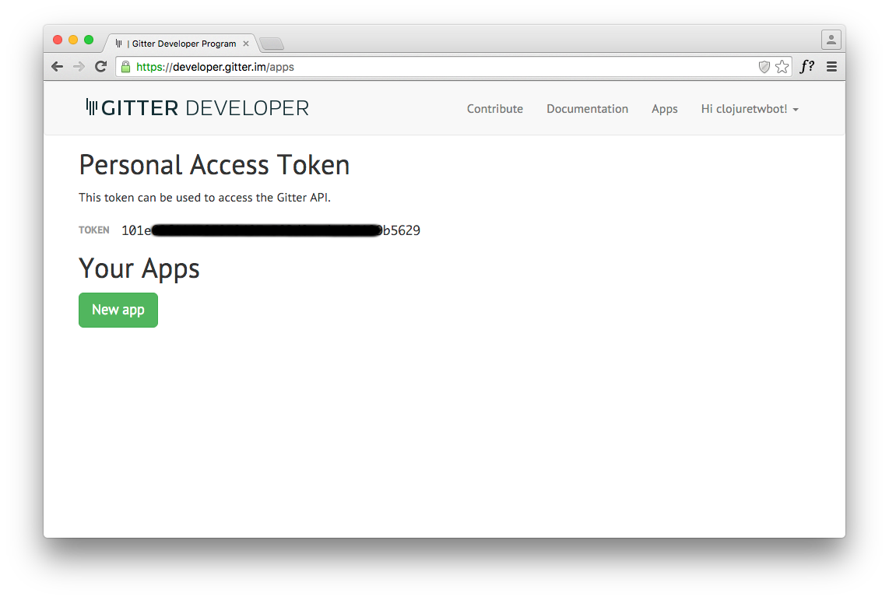
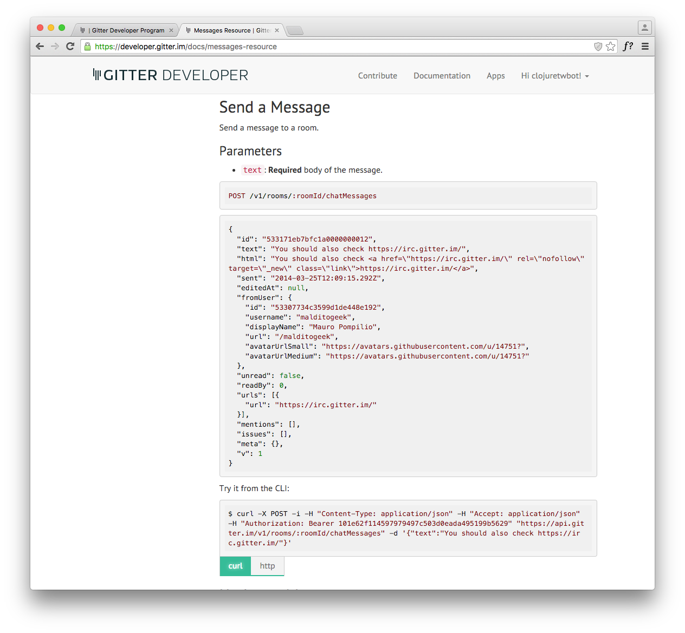
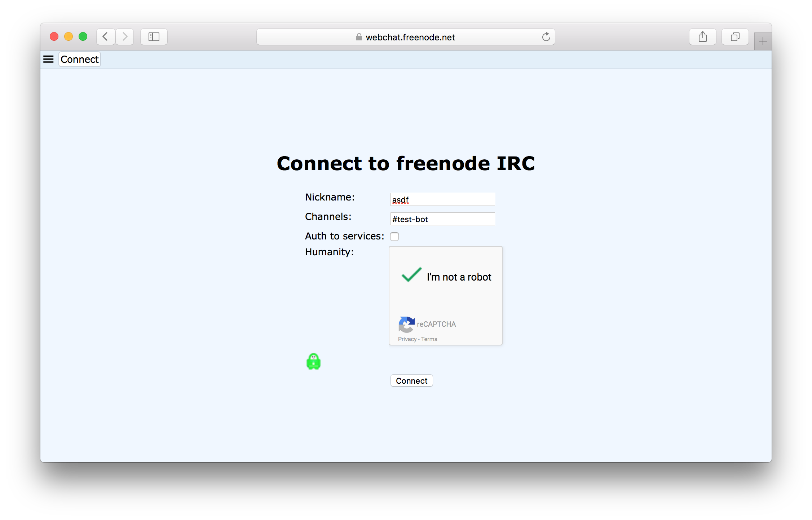
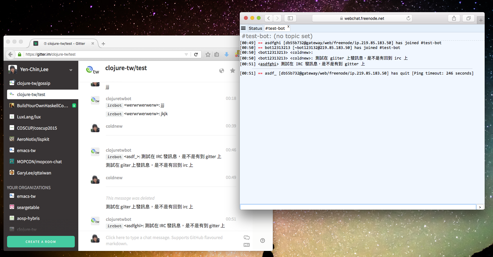

最近因為和朋友在 Github 上弄了 clojure-tw 群組，為了現代人通訊方便，便決定第一個
程式就是 irc <-> gitter/slack 的橋接程式，用來溝通 freenode 上的 #clojure.tw
與 clojure-tw/gossip 這個 gitter 頻道與 slack 上的 clojure-taiwan 頻道。
但很不幸的是，由於 clojurians 這個 slack 群組因為 Admin 關閉了機器人支援，因此最 後就只實作了 irc <-> gitter 的通道，完整程式碼我已經放到了 clojure-tw/irc-bridge ，這篇文章就來說說這個程式大致上是怎樣運行的。
當然，為了簡化本文的描述，我另外弄了個更簡單的實作版本～
建立我們的專案
本篇文章還是依照以往的規則，使用預設的 lein 樣板，因此我們這樣建立名為 mybot 的專案:
coldnew@Rosia ~ $ lein new mybot
專案建立完成後，我們要稍微修改一下 project.clj ，在 :dependencies 欄位加上一
些本文會用到的函式庫
(defproject mybot "0.1.0" :description "A simple example to create irc/gitter bridge" :url "http://example.com/FIXME" :license {:name "Eclipse Public License" :url "http://www.eclipse.org/legal/epl-v10.html"} :dependencies [[org.clojure/clojure "1.7.0"] [org.clojure/core.async "0.2.374"] [clj-http "2.0.0"] [http.async.client "0.5.2"] [irclj "0.5.0-alpha4"] [org.clojure/data.json "0.2.6"]] :aot :all :main mybot.core)
先弄個簡單的 Hello, Clojure!
為了實現我們的 野心 程式，我們先修改 src/mybot/core.clj 讓我們可以使用 lein
run 執行我們的程式，順便把需要使用的函式庫載入 (本文後面只會更改這個檔案）
(ns mybot.core (:require [irclj.core :as irc] [irclj.events :as events] [clj-http.client :as client] [http.async.client :as http] [clojure.data.json :as json] [clojure.core.async :refer [chan go-loop >! <! put!] :as async]) (:gen-class)) (defn -main [& args] (println "Hello, Clojure!"))
使用 lein 執行程式
coldnew@Rosia ~/mybot $ lein run Hello, Clojure!
取得 gitter token
為了能夠將訊息發布到 gitter 上，我們必須取得你的 gitter 帳號的 token，這邊我使用 的是 clojuretwbot 這個帳號去登入 GITTER DEVELOPER 網站，你會看到 gitter 提供了你這 個帳號可以使用的 token，我們將使用他來用於 Gitter API 上。

由於 gitter 要換帳號的 token 好像比較麻煩，因此建議不要散佈你的 token 出去…
取得 gitter 的 ROOM ID
除了 token 以外，因為我們要監聽/發布訊息到某個 gitter 頻道，因此要知道該頻道的 ROOM ID 才行，這邊可以參考 GITTER DEVELOPER ROOMS-RESOURCE 這頁，我自己則是使用 curl 命令來取得需要使用的資訊
首先先將環境變數 TOKEN 設定為你的 gitter token
coldnew@Rosia ~ $ export TOKEN="YOUR TOKEN"
接下來我們就可以透過 curl 去取得這個帳號的所有 room 資訊，成功的話會回傳 JSON 格式的訊息
coldnew@Rosia ~ $ curl -i -H "Accept: application/json" -H "Authorization: Bearer $TOKEN" "https://api.gitter.im/v1/rooms"
[{"id":"564cab6116b6c7089cbb32be","name":"clojure-tw/test","topic":"","uri":"clojure-tw/test","oneToOne":false,"userCount":2,"unreadItems":0,"mentions":0,"lastAccessTime":"2015-11-24T19:14:20.775Z","lurk":false,"activity":false,"url":"/clojure-tw/test","githubType":"ORG_CHANNEL","security":"PUBLIC","noindex":false,"tags":[],"roomMember":true}]
由於 JSON 格式一行實在難以讓人看清，因此你可以把資訊複製到 http://jsonprettyprint.com/ 去把資訊變成人眼好判讀的樣子，這是我得到的結果
[ { "id": "564cab6116b6c7089cbb32be", "name": "clojure-tw\/test", "topic": "", "uri": "clojure-tw\/test", "oneToOne": false, "userCount": 2, "unreadItems": 0, "mentions": 0, "lastAccessTime": "2015-11-24T19:14:20.775Z", "lurk": false, "activity": false, "url": "\/clojure-tw\/test", "githubType": "ORG_CHANNEL", "security": "PUBLIC", "noindex": false, "tags": [ ], "roomMember": true } ]
於是就可以知道，我目標的 ROOM ID 為 564cab6116b6c7089cbb32be
將訊息發佈到 gitter 上
知道 gitter 的 token 以及 room-id 後，我們就可以試著手動送訊息到 gitter 上，我們 先增加一個名為 config 的變數來存放比如 gitter 或是 irc 資訊用
(def config {:gitter {:token "YOUR TOKEN" :room-id "YOUR ROOM ID"}})
接下來可以參照 GITTER DEVELOPER MESSAGE-RESOURCE 一節，使用 HTTP POST 命令將訊息 傳送到 gitter room 裡面。

當然我們不想在 Clojure 裡面還要通過系統命令呼叫 curl ，因此我們使用 clj-http 這個優秀的函式庫幫我們處理 HTTP POST 請求，由於傳送給 gitter 時需要將 clojure 的 hash-map 格式轉換成 json，這部份則是透過 data.json 這個函式庫來處理。
(defn send-to-gitter! "Send message to gitter." [message] (let [{:keys [token room-id]} (:gitter config)] (client/post (str "https://api.gitter.im/v1/rooms/" room-id "/chatMessages") {:content-type :json :accept :json :headers {"Authorization" (str "Bearer " token)} :conn-timeout (* 10 1000) :body (json/write-str {:text message})})))
於是你就可以試試這個函式，看看是否有把訊息丟到你的測試用 gitter 頻道上
(send-to-gitter! "Hi, this is a test!!")
從 gitter 取得訊息
能夠傳送訊息到 gitter 後，接下來我們就要想辦法從 gitter 那邊將對話的訊息擷取出來，理 論上我們傳送訊息給 gitter 時使用的是 HTTP POST 命令，那取得資訊應該就是用 HTTP GET 了吧？
但是我們怎麼知道什麼時間點 gitter 會有新的訊息出現? 使用 polling 的模式每隔 1ms 問 gitter 有沒有新的訊息嗎？這種狀況會不會導致有訊息漏接?
為了解決這個問題，因此取得 gitter 上面的訊息應該要選用 Streaming-API 來打開一個與 gitter server 的連線，當有新的訊息時將訊息印出來 or 傳送給我們的 IRC 機器人。
有一點要注意的事情是，gitter 會隔一段時間送一段空白訊息過來，因此這邊要把空白訊息 給濾掉，省得麻煩。
(defn listen-gitter-event [] (let [{:keys [token room-id]} (:gitter config)] (with-open [conn (http/create-client)] (let [resp (http/stream-seq conn :get (str "https://stream.gitter.im/v1/rooms/" room-id "/chatMessages") :headers {"Authorization" (str "Bearer " token) "Connection" "keep-alive"} :timeout -1)] (doseq [s (http/string resp)] (when-not (clojure.string/blank? s) (println (str s)) ))))))
如果有人在 gitter 上發言，你就會得到像是以下的 JSON 訊息
{ "id": "565526b4f59a8f0758a6a71b", "text": "asd", "html": "asd", "sent": "2015-11-25T03:10:44.831Z", "fromUser": { "id": "564c878816b6c7089cbb2d1e", "username": "clojuretwbot", "displayName": "Clojure-TW Bot", "url": "\/clojuretwbot", "avatarUrlSmall": "https:\/\/avatars1.githubusercontent.com\/u\/15867812?v=3&s=60", "avatarUrlMedium": "https:\/\/avatars1.githubusercontent.com\/u\/15867812?v=3&s=128", "v": 2, "gv": "3" }, "unread": true, "readBy": 0, "urls": [ ], "mentions": [ ], "issues": [ ], "meta": [ ], "v": 1 }
當然身為 clojurians，我們一定會對 JSON 充滿著不屑，因此使用 data.json 將 JSON 格 式轉換成 Clojure 自己的格式
;; `s` is response from gitter (json/read-str s :key-fn keyword) ;; => {:mentions [], :urls [], :v 1, :unread true, :meta [], :issues [], :sent "2015-11-25T03:27:06.086Z", :id "56552a8a63bfb30b58e4349e", :readBy 0, :fromUser {:id "564c878816b6c7089cbb2d1e", :username "clojuretwbot", :displayName "Clojure-TW Bot", :url "/clojuretwbot", :avatarUrlSmall "https://avatars1.githubusercontent.com/u/15867812?v=3&s=60", :avatarUrlMedium "https://avatars1.githubusercontent.com/u/15867812?v=3&s=128", :v 2, :gv "3"}, :html "asd", :text "asd"}
最後因為我們目的是要寫 bot，因此要能夠知道 gitter 上是 誰 講話，以及講的 內
容 ，因此解析 gitter 訊息這段 code 就變成了這樣
(doseq [s (http/string resp)] (when-not (clojure.string/blank? s) (let [{:keys [fromUser text]} (json/read-str s :key-fn keyword) username (:username fromUser)] (println (str username ": " text)) )))
到此，gitter 功能基本上已經完成，是時候處理 IRC 功能了~
從 irc 取得訊息
完成 gitter 功能後，我們接下來要把 irc 訊息導向給 gitter 去，為了讓事情更簡單，這 邊只考慮如何取得 irc 訊息即可。
不過先讓我們設定好我們的 irc 連線資訊。
我們為了不干擾其他人，使用了 irc.freenode.net 裡面的 #test-bot 這個頻道來進
行測試，測試用的 nickname 則是 bot12313213 。
(def config {:gitter {:token "YOUR TOKEN" :room-id "YOUR ROOM ID"} :irc {:server "irc.freenode.net" :port 6667 :nickname "bot12313213" :channel "#test-bot"}})
接下來要實作 irc 連線功能，這裡使用完全用 Clojure 實做的 Raynes/irclj 函式庫來減 輕我們的負擔，由於連線會涉及到 socket 的開關，因此我們使用一個 atom 來紀錄我們 irc 連線的資訊。
(def conn (atom nil))
於是我們就可以透過 irclj 函式庫的功能來對 irc 進行連接，並進入到我們想使用的頻道
去，注意到 irclj 的設計是使用異步模式，因此在處理 privmsg 這個 callback 時就會
有點寫 javascript 的感覺。
連線完成後將連線資訊存入 atom 中，我們將使用這個原子來發布訊息到 irc 中。
(defn listen-irc-event [] (let [{:keys [server port channel nickname]} (:irc config) c (irclj.core/connect server port nickname :callbacks {:privmsg (fn [ _ {:keys [nick text]}] (println (str nick ": " text))) :raw-log irclj.events/stdout-callback ; for debug })] ;; join to channel (irclj.core/join c channel) ;; save the connection to atom (reset! conn c) ;; tick the irc server to prevent get "Connection reset by peer" error. (while true (irc/message c server "Hi") (Thread/sleep 5000))))
而在連線的最後，我們弄一個死循環，讓這個程式每 5 秒提醒一次 freenode 伺服器說我這 個機器人還活著，不要強制切斷與我的連線。
傳送訊息到 irc 上
發送訊息其實就只是 irclj 函式的使用而已
(defn send-to-irc! "Send message to irc." [message] (let [{:keys [channel]} (:irc config)] (irclj.core/message @conn channel message)))
如果你有連上 REPL 的話，就可以直接試試看，看你測試用的 irc channel 是否有收到訊息
(send-to-irc! "Hi, this is a test!!")
透過 core.async 進行整合
完成了獨立的 gitter 與 irc 讀寫功能，現在我們要將這些功能合併成一個完整的專案那 要怎樣作呢？我們要怎樣在收到 gitter 訊息後輕鬆愉快的將這些訊息丟到 queue 中並傳送給 irc 呢？
在 Clojure 中，使用 core.async 是一個非常好的選擇，我們可以在不同的線程中，將訊 息丟給 core.async 中的 channel，而當 channel 中有東西的時候，則會提交給 gitter 或是 irc，你可以想像 core.async 幫我們實現一個用來處理事件觸發的線程。
如果你還是聽不懂，沒關係。這邊有一篇很不錯的 core.async 相關的解釋可以參考: Clojure 風格的 JavaScript 並發編程
為了使用 core.async，我們分別建立 gitter 以及 irc 專用的 channel，用來存放接收到的訊息。
(def irc-chan (chan)) (def gitter-chan (chan))
接下來修改監聽 gitter 事件用的函式，為了避免同樣的訊息送到 gitter 後又被傳給 irc，
我們先設定一個過濾器避免訊息有 ircbot 這個字眼。接下來則是將訊息丟到
gitter-chan 裡面去。
(defn listen-gitter-event [] (let [{:keys [token room-id]} (:gitter config)] ;; skip (let [{:keys [fromUser text]} (json/read-str s :key-fn keyword) username (:username fromUser)] (when-not (re-find #"ircbot" text) (put! gitter-chan (str "<" username ">: " text))))))
同樣的我們在 irc 監聽事件的地方進行檢查，避免機器人傳送自己傳送過的訊息給 gitter，
若有需要傳送的訊息則將其加入到 irc-chan 去。
(defn listen-irc-event [] (let [{:keys [server port channel nickname]} (:irc config) ;; skip :callbacks {:privmsg (fn [ _ {:keys [nick text]}] (when-not (re-find (re-pattern nickname) nick) (put! irc-chan (str "`ircbot` <" nick ">: " text)))) ;; skip
接著我們建立我們監聽 channel 事件的循環，一旦 queue 裡面有東西，則將訊息丟給 gitter 或是 irc 中。
(defn event-loop [] ;; gitter -> irc (go-loop [] (send-to-irc! (<! gitter-chan)) (recur)) ;; irc -> gitter (go-loop [] (send-to-gitter! (<! irc-chan)) (recur)))
就這樣，我們修改主程式並讓 irc 以及 gitter 監聽程式處於獨立的 thread 中整個程式就完成了。
(defn -main [& args] ;; start event-loop (event-loop) ;; start listener (future (listen-irc-event)) (future (listen-gitter-event)))
測試我們的程式
由於有些人可能不知道怎樣連線到 irc，因此這邊弄個簡單的測試介紹
你可以參考以下圖片到 https://webchat.freenode.net 來進行網頁版的 irc 連線，這裡
以 #test-bot 作為範例

接著使用你的測試帳號連接到 gitter，完成並將 token 以及 room-id 等資訊填入到
config 變數後，執行我們的程式
coldnew@Rosia ~/mybot $ lein run
試試在兩邊傳送訊息看看，是不是真的能夠互通了 !?

取得範例程式碼
本篇文章是我寫完 clojure-tw/irc-bridge 後另外建立的簡單範例程式碼，因此一樣是存 放在我自己的 GitHub 上，你可以使用以下方式取得程式碼
git clone https://github.com/coldnew/blog-tutorial-examples.git
並切換到 2015/mybot 資料夾去
coldnew@Rosia ~ $ cd blog-tutorial-examples/2015/mybot
程式的執行方式則和本篇文章相同 ~ Have Fun~~